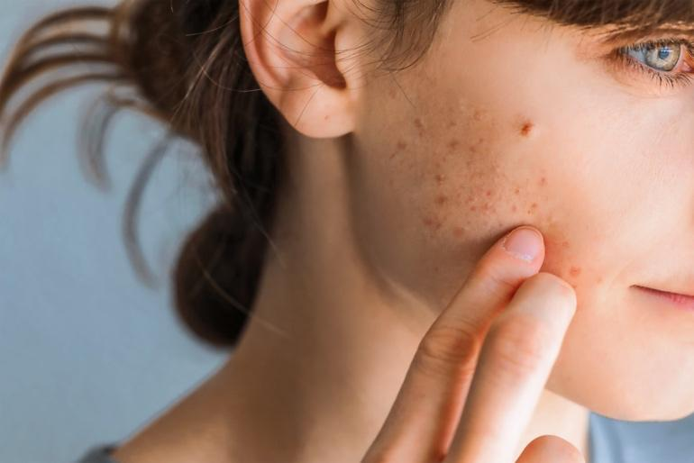
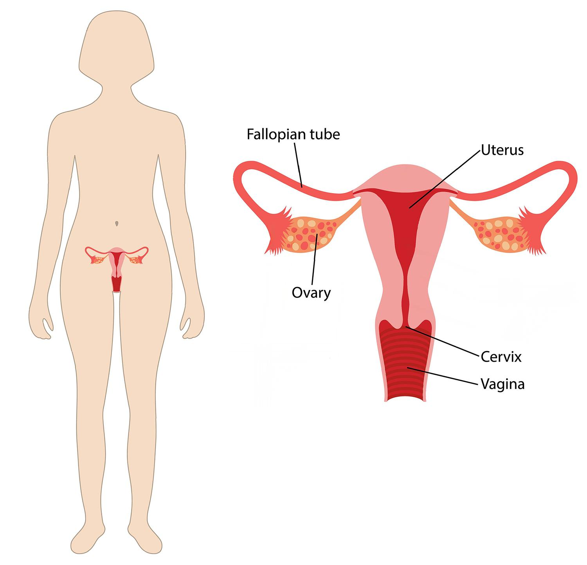
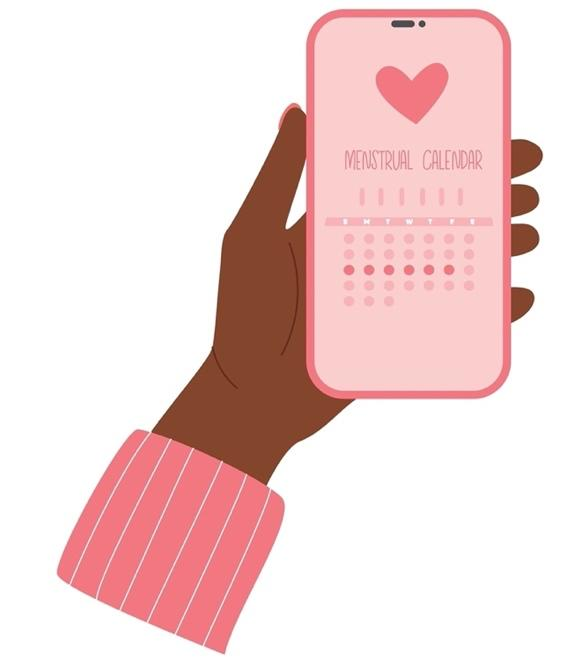
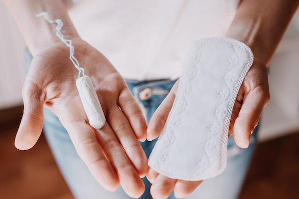

Puberty is the time when your body starts to grow and change. You begin to grow from a child into a teenager and then into a woman.
For most girls, puberty starts between ages 8 and 13. Body changes are normal. Every girl goes through them, but not at the same time. Your experience may be different from your friends, and that is OK.
Your brain helps start puberty. It tells your body to make hormones, which are tiny messengers. Hormones tell your body how to grow, change, and get ready for the next stage of life.
Growing up is a big journey. Sometimes, it feels fun and exciting. Other times, it may feel strange or even scary. All of those feelings are OK. Everyone feels different things.
If you ever feel confused, nervous, or just want to talk, you are not alone. There are people who care about you, like a parent, teacher, school nurse, or your care team. You can ask them any questions. They want to help you feel safe and supported.
Here are some common changes you may see:
Breasts may start to grow: This might feel tender or itchy at first.
Hair may grow: Hair can grow under your arms and on the skin around your vagina, the opening between your legs. You might also see more hair grow on your arms and legs.
Body shape may change: You may notice a more rounded shape of your hips or thighs.
You may sweat more: Your body may smell different. Bathing more often can help.
Skin changes: The changes in your hormones may give you pimples or oily skin. Sometimes, pimples are called acne. It is common during puberty. If you have pimples that get worse or do not go away, talk to your care team. They may suggest creams or pills to help clear your skin.

Mood changes: You may feel happy one minute and sad the next. This is normal. Hormones can cause these changes.
A period is a normal part of growing up. It happens when a small amount of blood comes out of your body through the vagina. This blood comes from the uterus, which is the place inside your body where a baby could grow someday.
Getting your period means your body is changing and starting to take steps to become an adult. You are still young, and this is just one part of how your body grows.

Most girls start their first period between ages 9 and 13. Some girls may start earlier or later, and that is OK. Every person is different.
Before your first period, you might notice a clear or white fluid in your underwear. It can happen up to a year before your period. This is called discharge, and it is normal. It means your body is getting ready for your first period.
A period usually happens about once a month.
It may last 3 to 7 days.
It may not come at the same time every month at first.
Over time, your body may settle into a regular cycle.
You can use a calendar or app to keep track.

Each month, your uterus makes a soft lining inside. Your body does this in case a baby needs to grow there someday. If you are not pregnant, your body does not need the lining, so it lets go of it. The lining leaves your body as blood.
Period blood can look different each day. This is normal.
At the start or end of your period, the blood may be light brown or pink. This is called spotting.
During the middle of your period, the blood may be bright red or dark red.
Sometimes, you may see small clumps or clots. These are just bits of the soft lining from inside your uterus.
The blood may be thicker or thinner depending on the day.
All of these are normal. If you are ever unsure, ask a trusted adult or your care team.
Some girls have cramps during their period. Cramps happen when muscles in your lower belly tighten and cause pain.
This is normal, and there are ways to feel better:
Use a heating pad on your belly.
Try gentle movement or rest.
Ask an adult if you can take pain relief medicine, like ibuprofen, called Advil® or Motrin®, or acetaminophen, called Tylenol®.
Starting your period is a big change. It is normal to feel shy, nervous, or unsure.
You are not alone. Every girl goes through this in her own way.
If you have questions, talk to a trusted adult, like a parent, school nurse, or your care team. They are here to help you understand your body and feel more comfortable.
There are different ways to catch period blood. You can pick what feels best for you. Even if you have not gotten your period yet, you can get these supplies to be ready. Whichever you choose, make sure to replace it every few hours, or more often if needed. Here are the most common options:
Pads are soft, flat pieces that stick to your underwear. They catch the blood after it comes out of your body.
Pads come in different sizes. They can be long, short, thick, or thin.
You can choose the ones that feel best for you.
They are easy to use, especially for younger girls.
You should change your pad every 4 to 8 hours, or sooner if it feels full.
Some pads are made for overnight, so they are longer and help stop leaks.
Pantyliners are small, thin pads you can wear before or after your period when bleeding is light.
Period underwear looks just like regular underwear but can soak up blood.
You can wear period underwear for light to medium bleeding.
They are reusable. You wash them and wear them again.
You may need 3 to 10 pairs for your whole period.
Tampons go inside your vagina to catch the blood before it comes out.
They are small and soft, and some have a smooth plastic or cardboard tool called an applicator to help put them in.
Others do not have applicators and are placed with your fingers.
Tampons should be changed every 4 to 6 hours.
Never wear a tampon longer than 8 hours. If left in too long, a rare but serious illness called toxic shock syndrome can happen.
Tampons take some practice to use. Some girls wait until they are older to try them.

Your care team is here to support you. They can:
Answer your questions
Help with cramps or heavy periods
Make sure your body is growing in a healthy way
Talk with you about your feelings
Eat fruits and vegetables: These help your body grow and stay strong.
Drink water: Your body needs water to work well.
Move your body: Try to get 1 hour of play or exercise each day. If you have cramps, gentle movement like walking or yoga may help. Ask your care team for advice.
Get sleep: Your body and brain need rest to grow.
Shower often: This keeps your skin clean and helps with body smell.
Use deodorant: This helps stop sweat smells from your underarms.
Change pads or tampons: Do this every few hours, or more often it you need to, to stay clean.
Wear a bra if needed: It can help support growing breasts.
It is normal to feel many emotions. You might feel:
Happy
Sad
Angry
Embarrassed
These feelings are part of growing up. It is OK to cry or talk to someone about how you feel. You are not alone. Your care team, family, and friends can help you.
If you sad or upset often, or for more than 2 weeks, a counselor or therapist can help. Talking about your feelings is a healthy choice.
Your body will keep changing for many years. Keep going to your checkups. Your care team will help make sure everything is going well.
Ask questions, take care of your body, and speak up when you need help.
Thank you for trusting us with your care. We are here to support you and want you to feel your best. Contact us with any questions.
IF YOU HAVE A MEDICAL EMERGENCY, CALL 911 OR GO TO THE EMERGENCY ROOM.
The information presented is intended for general information and educational purposes. It is not intended to replace the advice of your health care provider. Contact your health care provider if you believe you have a health problem.
Last updated May 2025
© 2025 Mytonomy, Inc. All rights reserved.